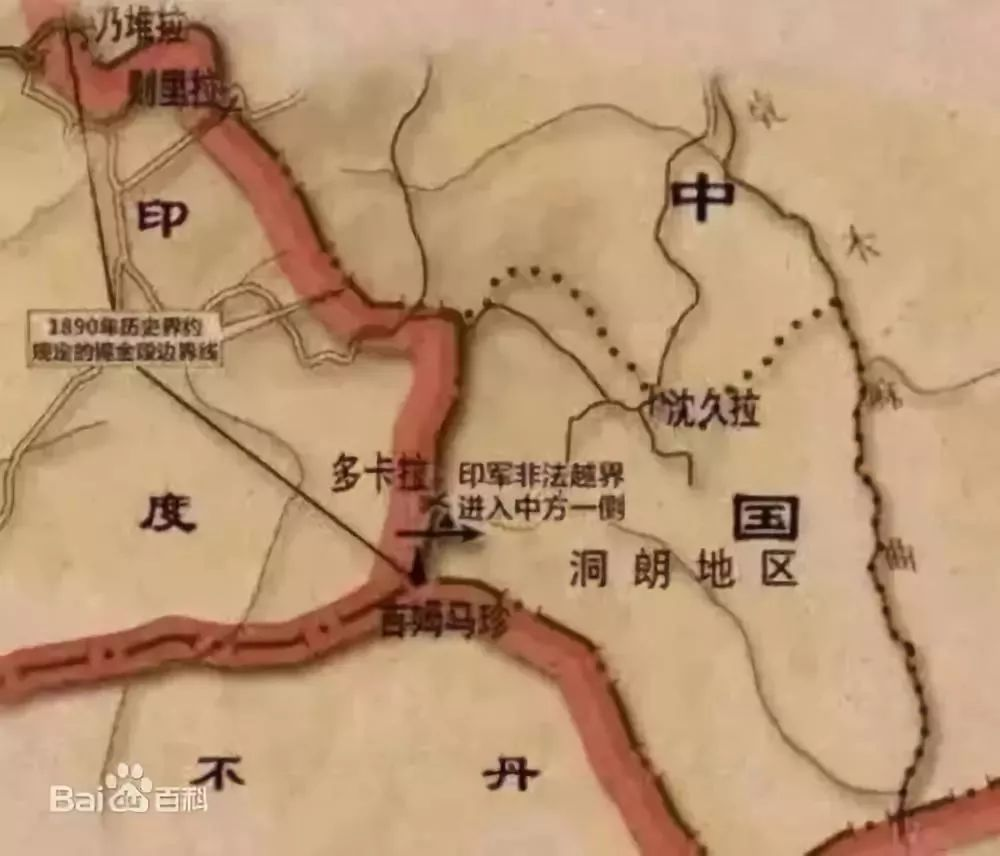
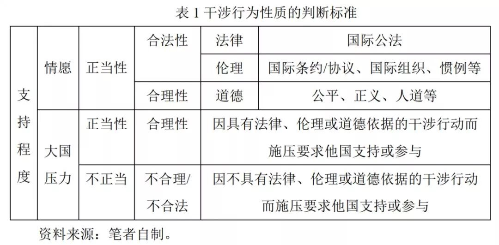
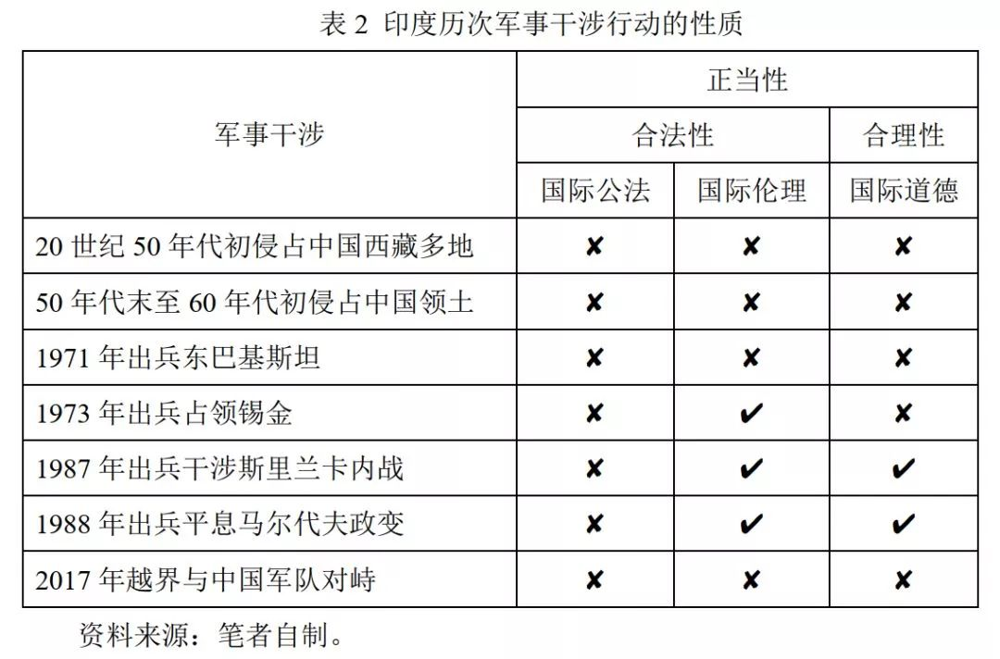
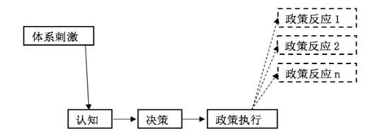
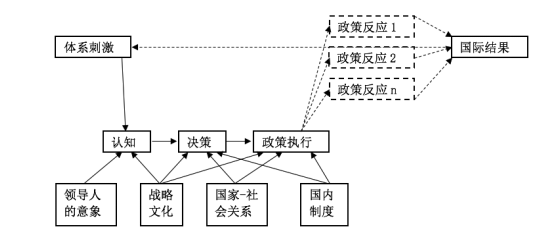
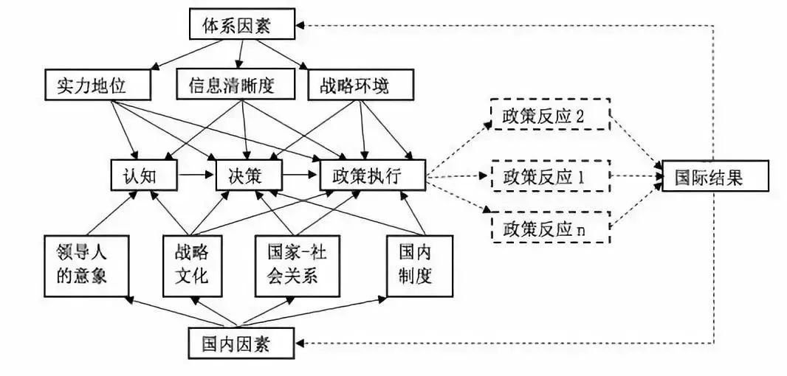
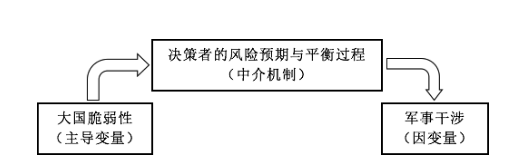
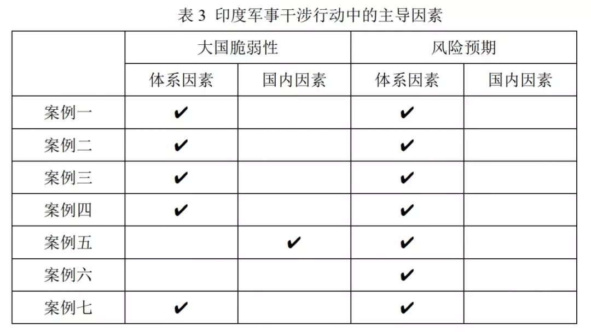
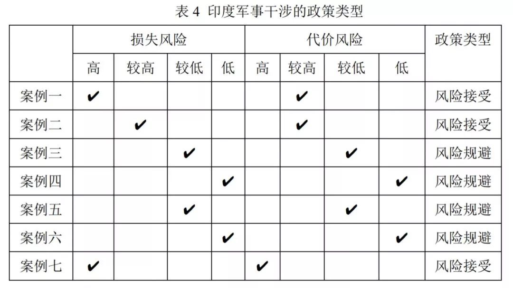

收录于合集

简 介
** ** 【作者介绍】**** 孙西辉，中国社会科学院亚太与全球战略研究院助理研究员
【本文来源】 《当代亚太》2018年第5期
【本文编辑】 张 耀
本文由国政学人微信平台独家首发！

内 容 提 要
2017年6月18日，印度军队以安全关切为由越界阻止中国在本国境内修路，从而引发中印洞朗对峙。此次军事行动是印度历史上多次军事干涉行动之一，它们具有一致的内在逻辑，主要体现为印度的大国脆弱性和风险平衡两大特征。充分解释这一逻辑，需要进行规范的学术研究。 文章的基本研究思路是：在区分干预与干涉等概念的基础上探讨印度的军事干涉行为，基于新古典现实主义的理论路径建立分析模型，确立分析印度军事干涉的主导变量和中介机制，针对印度军事干涉各环节提出主要命题，并以其历次军事干涉行为为例加以分析。 印度军事干涉行为的逻辑和分析中印洞朗对峙过程中的博弈表明，如果印度的主观认识不变，类似洞朗对峙的事件可能还会发生，中国需要在保持中印关系稳定的基础上加强与印度合作，同时使其明了中国的“底线”与“红线”。
关 键 词
新古典现实主义；军事干涉；大国脆弱性；风险平衡
正 文
2017年6月18日，印度军队越过中印边界锡金段进入中国境内，引发长达两个多月的中印洞朗对峙。印度以中国在洞朗地区修路事关其安全为由派兵越界阻止，这是印度的一次军事干涉（military interference）行动。此外，印度自独立以来多次在其周边地区进行军事干预（military intervention）。印度的一系列军事干预行动，使人不禁感到困惑， 作为一个发展中国家，印度为何在周边地区频繁进行军事干预？这些军事干预是否属于同一类别？其背后存在怎样的逻辑 ？ 目前，未见到有关印度军事干预的专门研究，只有少数学者对其中的某个或某些事件进行了分析。例如，有学者从南亚霸权的角度解释印度对尼泊尔、不丹、锡金、巴基斯坦、斯里兰卡和马尔代夫的军事干预/干涉。然而，倘若军事干预的目标仅为中小国家，这种解释还有一定的说服力。但是，对于以中国为目标的军事行动，这种思路显然缺乏解释力。 本文将在区分干预与干涉等概念的基础上探讨印度的 军事 干涉行为，基于新古典现实主义的理论路径建立分析模型，确立分析印度 军事 干涉行为的主导变量和中介机制，针对印度军事干涉各环节提出主要命题，并以印度的历次 军事 干涉行动为例加以分析，进而总结其对中国外交的一些启示。
一、基本概念辨析与分析框架构建
干预与干涉都是国际政治领域常用的概念，也是常见的外交政策与手段。然而，学术界对这两个概念的理解和使用较为混乱。分析印度的军事干涉问题需要辨析相关概念的含义、类型和性质，进行规范的学术研究也要求采用适合的理论与方法作为分析工具。以下将基于干预与干涉的概念确定军事干涉的含义，在评析新古典现实主义最新理论成果的基础上建构分析模型。
（一）客体与强制性：界分干预与干涉的关键
如前所述，学术界对干预的界定并不一致，有人用其泛指对他国产生影响的行为，有人强调影响主权国家内部事务的外部行为，有人突出社会环境的决定作用，也有人强调干预概念的可操作性特征。在上述研究中，詹姆斯·罗森瑙（James N. Rosenau）对干预概念的探讨极富启发意义。他在梳理相关文献的基础上，总结了干预概念的道德、法律和战略维度，提出可操作性定义（operational definition）的两个特征，即“打破常规”（convention-breaking）和“权威导向”（authority- oriented）。基于学界的相关研究，本文认为， 干预指国际政治行为体出于道义、法律或国家利益的目的对其他国家或相对独立的政治实体的内部事务施加某种影响的言行或政策。 这一定义具有 四个方面的含义：一是干预的主体是国际行为体，包括国家行为体和非国家行为体；二是干预的客体是国家或相对独立的政治实体；三是干预具有道义、法律或国家利益方面的动机；四是干预的方式体现为相关言行和对外政策等。
对于干预的类型，学界尚未系统地加以研究，但相关文献也有所涉及。例如，罗森瑙认为，关于干预概念的文献充斥着对军事干预、宣传干预、经济干预、外交干预、意识形态干预和海关干预的讨论。约瑟夫·奈（Jose S. Nye）不仅区分了广义和狭义的干预概念，而且根据干预的强制性程度列出了演讲、广播、经济援助、军事顾问、支持反对派、封锁、有限军事行动和军事入侵等形式。本文认为，基于不同的划分视角，干预具有不同的类型。例如，基于干预主体的角度，可分为国家行为体的干预和非国家行为体的干预；基于干预客体的角度，可分为对主权国家的干预和对非主权政治实体的干预；基于干预方式的角度，可分为政策层面的干预和行动方面的干预；基于干预手段的角度，可分为经济干预、政治干预、文化干预和军事干预等；基于干预强制性程度的角度，可分为低强制性干预、中强制性干预和高强制性干预；基于干预性质的角度，可分为正当/不正当干预、合法/不合法干预等。
与干预紧密相关的另一个概念是干涉，但多数学者没有区分或没有意识到二者的差异，常将它们混同或替代使用，导致概念的混乱与分析的模糊。 当然，也有少数学者指出了二者的区别。例如，奈认为，广义的干预指影响其他主权国家内部事务的行为，狭义的干预指对其他国家内部事务的强迫性干涉（forcible interference）。也就是说，他在叙述广义与狭义的干预概念时，无意识地基于强制性程度区分了干预与干涉。陈琪和黄宇兴通过归相关论述，有意识地区分了干涉与干预，参照标准主要包括客体、目标指向、强制性程度和实际行动。本文赞同上述观点，认为 需要辨析二者的关系。一方面，二者的主体、方式、手段和性质相似，但干预的外延大于干涉的外延，干涉属于干预的范畴，并非所有干预都是干涉。另一方面，二者的主要区别在于客体和强制性程度的不同。干预的客体可以是国家行为体也可以是非国家行为体，强制性程度较弱；而干涉的客体仅限于国家行为体，强制性程度较高，指国际行为体旨在通过某种手段强制性改变其他国家内部事务的政策和行为。
因干涉手段的独特性，军事干涉的实施主体通常是国家。因此， 军事干涉指一国旨在通过军事手段强制性改变其他国家内部事务的政策和行为。 军事行动包括多种形式，如军事物资援助、武装护送、联合军事演习、情报的收集与分享、秘密训练他国武装人员、派遣军事顾问、派遣特种兵、军事支持或镇压暴乱、空中袭击、小规模冲突、有限战争和大规模战争等。美国陆军司令部在1993年的一份文件中将军事行动区分为战争与非战争两种，前者处于战争状态，以取得战争胜利为目标，包括大规模战争行动、进攻行动和防御行动等；后者可分为以预阻性战争和解决冲突为目标以及以促进和平为目标两类，第一类处于冲突状态，包括军事打击与空袭、强制实现和平、支持暴乱、反恐行动和维和行动等；第二类处于和平状态，包括反毒行动、救灾行动、民事支援（civil support）、重建和平和国家援助等。这种区分有其合理性和启发意义，但不能直接用于本文对军事干涉类型的划分，因为并非所有的军事行动都属于军事干涉。笔者认为，从强制性程度看，军事干涉包括抵近侦察、秘密训练他国武装人员和派遣军事顾问等低强制性军事干涉，派遣特种兵、军事支持或镇压暴乱、空中袭击和小规模冲突等中强制性军事干涉，以及有限战争和大规模战争等高强制性军事干涉。需要指出的是， 军事干涉有其适用的范围，如同并非所有的军事行动都属于军事干涉类似，并非所有的战争都属于军事干涉，因为超出干涉目标的军事行动不属于军事干涉。
（二）法律—伦理—道德：判定干预与干涉性质的标准
相较于确定主体、客体、方式、手段和程度而言，判断干预和干涉的性质极为不易，因为它们涉及道义、法律和国家利益等方面的动机和目的。然而，干预和干涉作为一种常见的对外政策或行为，我们必须在合理区分几组概念的基础上确立一套判断其性质的标准和方法。
第一，伦理与道德。 伦理（ethics）与道德（morality）语义相近，都与行为准则有关，但也存在一些微妙的差异。 一是词源涵义差异。 伦理侧重人际关系事实上如何的规律以及应该如何的规范，道德强调将应当遵循的原则和规范内化为个体的人格品质并形成德性。 二是核心价值差异。 伦理的核心是正当或合宜，本质是公平与适度；道德的核心是德与善，本质是个体完善自我价值的追求。 三是尺度标准差异。 衡量伦理的尺度主要存在于公共领域，具有“互主体性”和公共性；衡量道德的尺度主要存在于私人领域，具有主体性和私人性。本文认为，对于国际领域的干涉行为而言，国家是最重要的行为体。因此， 国际层面的伦理指规范国家间关系和行为的各种制度，包括国际公法、政府间协议、国际组织规章、惯例和习俗等；国际层面的道德指各国公认的价值观念和原则，如公平、正义和人道等。
第二，正当性与合法性。 正当性（justification）与合法性（legitimacy）是政治学、法学和社会学中经常成对出现的概念，同时也是极易混淆的术语。 由于一词多义的缘故，“justification”可以被译为“合法性”或“正当性”，“legitimacy”也可以被译为“正当性”或“证成性”，导致两个概念在中文语境中的使用混乱。在英语文献中，多数学者将合法性等同于正当性。当然，也有少数学者注意到二者的差异并试图加以区分。例如，约翰·西蒙斯（John Simmons）认为，某一行为、政策、事件或制度安排的正当性需要证明其“审慎理性”（prudentially rational）、“道德上的可接受性”（morally acceptable）或二者兼备，而国家的合法性是一种“复合的道德权利”（complex moral right），可以强加给国民“有约束力的责任”（binding duties），同时也承担各种义务。本文认为，西蒙斯的观点仍偏重道德层面，没有区分道德与伦理。因此， 衡量国际社会中干涉行为的正当性，需要综合法律、伦理和道德的维度，主要参考广义的合法性和合理性（reasonability）两个指标，前者体现为符合法律规定（legality）和符合伦理准则，后者体现为符合道德规范（见表1）。在判断干涉行为的合法性方面，不仅要看其是否符合法律和伦理的内在要求，还要看其是否符合法律规定的程序，如权威机构的授权等。在判断干涉行为的合理性方面，不仅要看其动机或目的，还要看其实施过程和结果。
第三，正当性与支持度。 与正当性密切相关的另一个概念是民众的支持度。通常认为，民众对一国政府或一项政策的支持程度，可以在很大程度上反映其正当性或合法性状况。这种观点在解释国内政治时或许较为合理，但国际社会的情况更为复杂。 就干涉行为而言，它在多大程度上得到其他国家的支持或响应，无法准确反映其正当性，更不用说合法性了。如表1所示， 国际社会对某一对外干涉行为的支持程度，除了基于法律、伦理和道德等因素构成的正当性之外，还受到基于实力相对分布的国家利益因素的影响。 也就是说，其他国家可能基于干涉行为的正当性自愿支持这一行为，也可能因受到他国（大国）的压力而被迫支持。当然，大国施压迫使其他国家支持干涉行动未必代表该行动一定不具有正当性，判断的主要标准仍是看该干涉行动是否具备法律、伦理和道德方面的正当性。

根据上述解释，在印度十次军事干预行动中，1948年武力吞并海德拉巴、1948年与巴基斯坦争夺克什米尔和1965年占领库奇兰恩不是军事干涉行动，因为当时的海德拉巴、克什米尔和库奇兰恩不是主权国家，也不是某个主权国家的合法领土。其他七次均属于军事干涉行动，但其正当性不完全相同。如表2所示，印度针对中国和巴基斯坦的四次军事干涉行动，既不符合国际公法的规定，也不符合国际伦理层面的准则，更不符合国际道德层面的规范，因而完全不具有正当性。1973年印度出兵占领锡金的行为不符合国际公法的规定，但1950年签订的《印度与锡金和平条约》使印度成为锡金的“保护国”，这使印度出兵占领锡金符合某种国际伦理层面的原则，但不符合国际道德规范，因而只具备一定程度的合法性，但不具备合理性，导致该行动的正当性不足。1987年印度干涉斯里兰卡内战和1988年平息马尔代夫政变的行动，不符合国际公法的规定，但均应两国政府的邀请，符合国际伦理原则和国际道德规范的要求，具有一定程度的合法性且具备合理性，两起行动的正当性较为充足。

（三）大国脆弱性与风险平衡：基于新古典现实主义的分析框架
新古典现实主义研究兴起于20世纪80年代后期，最初只专注于外交政策的分析，后来逐步由外交政策理论向国际政治理论发展。美国学者吉迪恩·罗斯（Gideon Rose）在1998年发表的书评中，将法里德·扎卡利亚（Fareed Zakaria）、兰德尔·施韦勒（Randall L. Schweller）、柯庆生（Thomas J. Christensen）、威廉·沃尔福思（William C. Wohlforth）和迈克尔·布朗（Michael Brown）等人以国内层次的因素为中介变量修正结构现实主义的研究称为新古典现实主义。中国学者陈志瑞和刘丰在2014年发表的论文中，进一步梳理了新古典现实主义的发展和主张，把罗斯提到的学者称为第一代新古典现实主义者；把斯蒂芬·洛贝尔（Steven E. Lobell）、杰弗里·托利弗（Jeffrey W. Taliaferro）和科林·迪克（Colin Dueck）等学者称为第二代新古典现实主义者。加拿大学者诺林·里普斯曼（Norrin M. Ripsman）、美国学者托利弗与洛贝尔在2016年出版的专著中，将罗斯提到的几位作者的研究称为第一类新古典现实主义；将他们三人2009年共同主编的文集中的研究称为第二类新古典现实主义；将他们三人2016年合写专著中的研究称为第三类新古典现实主义。
在里普斯曼等人看来，这三类新古典现实主义表明，该理论已经由专门解释一些反常现象（anomalies）的特殊理论发展为一般性的外交政策理论，进而发展成为一种对外交政策具有更强解释力且对国际政治问题具有一定解释力的一般性国际政治理论。与之相应，他们也把专门解释外交政策的前两类新古典现实主义模型（见图1）修正为解释国际政治问题的一般性理论模型（见图2）。比较两图可以清楚地看出三位作者对新古典现实主义的改进：一是概括了几类国内层面的变量类别；二是指出国内变量分别对认知、决策和执行过程的影响；三是通过指出国际结果（international outcomes）对体系的影响表明它由外交决策理论上升到一定程度的国际政治理论。以上修正表明， 第三类新古典现实主义在理论建构方面取得了巨大进步。尽管如此，新古典现实主义的最新研究成果仍具有一些明显的缺陷。一是虽然标出国内因素的类别及其在不同环节中的作用，但未标明体系因素的类别及其所发挥的作用；二是并非所有的外交决策都是体系因素起主导作用，任何时候都强调体系因素发挥主导作用的观点与一些客观事实和主观经验不符；三是国际结果可能对体系层次和国内层次都具有一定的反作用，仅指出国际结果对体系具有影响并不全面。

图1第一类和第二类新古典现实主义外交政策模型

图2 第三类新古典现实主义模型
对于第一个缺陷，三位作者曾归纳出相对实力分布、信号的清晰度和战略环境三个体系层面的变量，但可能出于使模型简约化的考虑并未在图中将其标注出来，这不仅导致体系层面与国内层面的变量因素不对称，而且无法表明体系层面的各因素如何对认知、决策和执行环节产生影响。对于第二个缺陷，主要原因或许是新古典现实主义源于对结构现实主义理论的回应，以及回应批评者对其是否与结构现实主义保持逻辑一致的质疑。三位作者坚持认为，新古典现实主义的目标是基于结构现实主义构建一种外交政策和国际政治理论，这将保留结构现实主义者所强调的国际体系的首要性。然而，完善理论是为了使之更具解释力，而不应为了理论而理论，更不能“削足适履”。更何况，体系因素具有影响国家行为的主导性（或唯一性）是结构现实主义的重要特征，但并不代表它是结构现实主义的界定性特征。对于第三个缺陷，三位作者忽略了国际结果对国内层次的反作用，或许与导致第二个缺陷的原因类似，即为了突出体系的主导地位而刻意忽视国际结果对国内层次的反作用。
基于以上理解， 本文进一步修正了新古典现实主义的理论模型（见图3），以力求清晰而全面地表明体系层面与国内层面的因素及其在外交政策各环节中的作用。 这种表述或许有违理论简约性的要求，但过于简约和抽象的理论显然无法解释许多复杂的国际问题。相对于简约性而言，理论的准确性更为重要。当然，图3是对新古典现实主义最新理论成果的全面描述，是以外交政策分析为基础的一般性国际政治理论。在解释具体的外交政策或国际政治现象时，需要结合实际问题建立适用的理论模型，而非千篇一律地使用这种一般性理论模型。 对于印度的 军事 干涉问题，笔者采用新古典现实主义的研究路径，认为体系层面和国内层面的因素对印度的外交决策共同发生作用，并借用托利弗的“风险平衡”（balance of risk）概念 建立分析框架（见图4）。 毋庸讳言，本文的分析存在一个理性主义前提，即国家是理性行为体，决策者是理性行为者，能够正确地认识本国的国情并在面临国际环境的变化时做出理性选择。

图3 修正后的新古典现实主义理论模型

图4 印度军事干涉逻辑的分析框架
本文与托利弗的“风险平衡”研究存在几点不同 ： 一是主体差异。 在实施主体方面，托利弗研究的是大国（great power）的干预/干涉行为，他虽未界定何为大国，但案例主要涉及一战中的德国、二战中的日本和冷战时期的美国与苏联等。可见，其大国特指全球性大国或超级大国。本文关注的印度虽然也可算作大国之列，但只是一个区域性大国，并非全球性大国或超级大国。 二是行为差异。 在对外行动方面，托利弗没有区分干预和干涉，更没有区分军事干预与非军事干预，本文在区分干预和干涉的基础上只讨论干涉行为中的军事干涉。 三是空间差异。 在实施空间方面，托利弗研究的是边缘地区（the periphery），即在地理上远离核心地区（the core）且该地区的国家或政治行为体无法对大国的本土构成威胁，而本文中印度的军事干涉均指向其邻国，其中不乏实力比其更强的大国。四是逻辑差异。在分析模型中，托利弗将领导人对国家实力、声誉和地位变化的预期水平（expectation level）作为自变量，将领导人的决策参考点（a reference point）作为中介变量，将领导人的风险倾向作为因变量。其中风险倾向包含两条因果链条：领导人预期国家实力增强à以现状作为期望值à规避风险行为；领导人预期国家实力减弱à以更有利的国际环境作为期望值à接受风险行为。在本文中，大国脆弱性（vulnerability）是主导变量，决策者的风险预期与平衡过程是中介机制，进行军事干涉是因变量，基本因果链条是：体系因素和国内因素共同导致国家的脆弱性à决策者对国际形势变化带来的潜在损失及应对潜在损失可能导致的代价的风险预期à决策者做出平衡风险的政策选择à进行军事干涉。
二、政策制定环节的主要命题与分析论证
在政策制定的过程中，决策者通常需要对相关事件有一个认知与决策的过程。笔者将基于上文建构的分析模型，就印度军事干涉行为的认知与决策环节提出三个相关的主要命题，并以已经发生的七次军事干涉行动为例进行分析论证。
命题1：印度 军事 干涉的主导变量不是追求大国地位，而是其大国脆弱性。
命题2：体系因素和国内因素共同导致印度的大国脆弱性，也共同影响其领导人的风险预期，但体系因素并非总是起主导作用。
命题3：印度的 军事 干涉是综合考虑两类风险所做出的政策选择，无论是“风险承受”型政策还是“风险规避”型政策都是理性政策。
（一）大国脆弱性：印度军事干涉行为的主导变量
脆弱性是国际关系领域的一个重要概念，但学术界也没有统一的界定。例如，萨沙·巴莉（Sasha Baillie）认为，国土狭小和资源有限导致小国的脆弱性，沃格翰·莱维斯（Vaughan A. Lewis）基于地理位置、政策运行和决策能力、信仰体制（belief system）、人口制度（systems of population of the state）、政治领导力、国土面积和国内资源等因素，将国家的脆弱性分为位置/领土脆弱性、政治脆弱性和经济脆弱性。罗伯特·基欧汉（Robert O. Keohane）和奈从相互依赖的角度区分了敏感性（sensitivity）和脆弱性，前者指一国变化导致另一国发生有代价变化的速度和所付代价的大小，后者指行为体因外部事件强加的代价而遭受损失的程度。本文认为， 任何国家都不同程度地存在脆弱性，这种脆弱性不仅体现在国际合作领域，而且更明显地体现在国际冲突领域。 在笔者看来， 脆弱性指一国对于因国际环境或他国政策变化导致的损害的承受能力，它取决于体系层面的相对实力分布，同时也受到内部治理状况、组织与动员能力等国内因素的影响。
印度在近代沦为英国的殖民地，殖民统治在给印度造成苦难的同时也为其带来了政治统一和经济发展，印度甚至被视为二战后世界第四大工业国。印度学者巴拉特·卡纳德（Bharat Karnad）认为，印度在二战结束时已经具备了大国的所有特点，如幅员面积、自然资源、资金基础和军事力量等。与之相比，印度的南亚邻国皆为中小国家或贫弱国家，北部邻国中国长期遭受战乱蹂躏，百废待兴且外部安全环境严峻，这种相对实力对比使印度具有成为大国的条件和基础。同时，印度长期坚持大国理想，并通过“同心圆外交”模式不懈地追求大国地位。印度追求大国地位的理想体现在不同时期的诸多对外政策与行为上，不少学者甚至将印巴战争以及出兵斯里兰卡和马尔代夫等军事干涉行为视为印度追求或显示大国地位的表现。在笔者看来，印度的上述行为具有一定的大国外交特征，但追求大国地位并非印度军事干涉的主导变量，因为它无法解释印度针对中国这个比其更强大国家的军事干涉行为。本文认为，印度虽然是一个地区性大国，却存在明显的大国脆弱性，导致其精英层具有强烈的不安全感或受损感，这是其军事干涉的主导变量。
在国际体系层面，印度的脆弱性主要源自两个方面。首先是印度在区域性国际体系中的地位变动。 如前所述，印度在二战后具备了大国基础，中国和日本等传统的亚洲大国则处于战后恢复时期，可以说，1955年之前的印度是一个亚洲大国和南亚霸权国。1955年至20世纪70年代，日本经济恢复并实现快速发展，中国和印度的经济则长期维持中低速发展，但中国的军事影响力和印度的政治影响力明显超过日本，印度在亚洲的大国地位逐步下降。80年代，中国实行改革开放后经济快速发展，日本经济由高速向中低速发展过渡，印度经济则进一步下滑，其大国地位和影响力基本上局限于南亚地区。90年代以来，中国维持发展势头，日本陷入低速发展，印度则通过经济改革实现较快发展，重新成为一个亚洲大国，但与此同时，中国和美国在南亚和印度洋的影响力日益增长，印度的南亚霸主地位并非那么稳固。 其次，与亚洲国际体系结构变动相一致的是中印两国间的实力对比变化。 在经济方面，冷战时期，中国的人均国内生产总值（GDP）稍高于印度但悬殊不大，但印度的人均GDP曾一度略高于中国；冷战结束后，中国GDP和人均GDP逐渐与印度拉开了距离，中印按当前美元汇率计算的GDP分别由1992年的4269亿美元和2843亿美元演变为2000年的12110亿美元和4621亿美元，2017年分别为122380亿美元和25970亿美元；中印按当前美元汇率计算的人均GDP分别由1992年的366美元和313美元演变为2000年的959美元和438美元，2017年分别为8826美元和1939美元。在军事方面，冷战时期由于受到经济实力和战略环境的限制，虽然中印的军事实力与其他军事大国相比具有很大差距，但中国因长期的战争磨炼在总体上强于印度。冷战后，两国的军事实力都有了较大发展，但差距也在迅速拉大。一方面，两国的国防预算呈现日益扩大的趋势。2010年至2017年，中国的国防预算由855亿美元增加到1617亿美元，印度则由273亿美元上涨至510亿美元。另一方面，两国的军事力量差距明显。有数据显示，2017年中印的军事人员分别为317万人和421万人，战机分别为2955架和2102架，坦克分别为6457辆和4426辆，舰船分别为714艘和295艘。
在国内因素方面，独特的国情进一步加剧了印度的大国脆弱性。主要包括四个方面的内容：一是中央政府的“弱势低效”。 印度是联邦制国家，各邦和中央辖区有较大的独立性和自治权，联邦政府对地方事务的控制力较弱。同时，由于制度、观念和腐败等因素，印度政府的效率低下。 二是民族和宗教复杂多元。 印度人种复杂、民族众多、血统混杂、语言纷杂，素有“人种博物馆”和“民族博物馆”之称，是一个典型的多民族国家。同时，印度也是世界上宗教最多的国家，被称为“世界宗教博物馆”。 三是社会不平等问题严重。 种姓制度的遗存导致社会阶层分化和社会不平等问题明显，重男轻女思想导致性别歧视严重，这两种因素共同导致不同阶层和性别之间的教育不公平和经济不公平现象十分突出。 四是基础设施落后。 印度的基础设施近年来有较快发展，但总体上落后的局面没有改变，仍无法满足其经济社会发展需求。这些因素不仅是印度增强国家综合实力面临的挑战，也是其动员国内资源应对国际压力的掣肘。
（二）风险预期：印度军事干涉前的理性认知
国际体系因素和国内因素共同决定了印度存在较高的大国脆弱性，这种客观存在的脆弱性映射到决策者的头脑中，成为其衡量国际环境或他国政策变化带来潜在损失或收益的重要基础。同时，决策者也会预测可能采取的应对政策与行动的潜在代价或收益。 因此， 决策者的风险预期是印度 军事 干涉前的理性认知，包括对国际环境变化的潜在损失或收益的风险预期，以及对所采取应对策略的潜在代价或收益的风险预期。 在托利弗看来，风险主要指受损或收益的可能性。这通常涉及决策者对一国的军备、领土、经济和伤亡等方面的认知，也涉及决策者对大国决心的信誉、承诺的可靠性和国际威望等方面的主观判断。然而，托利弗并未区分损失风险与代价风险，只讨论了政策选择的代价风险。本文认为， 决策者在进行风险评估时需要考虑损失风险和代价风险这两类风险，即国际环境变化给一国带来损失或收益的可能性，以及一国为应对国际环境变化而选择某项政策可能导致的潜在代价。 基于此，笔者将分析印度在七次军事干涉行动中的风险预期。
第一，20世纪50年代初印度军事干涉中国的风险预期分析。在国际环境变化的风险预期方面，印度对于中国人民解放军1950年10月进驻西藏极为敏感，其精英层认为这使西藏不复作为中印之间的缓冲地带；同时，中国1950年7月参加抗美援朝战争显示了捍卫国家利益的决心和能力，印度对此心怀疑虑和恐惧，中印实力差距与对外行动的气势差异使印度产生了强烈的不安全感。1950年11月7日，印度时任内政部部长萨德尔·帕特尔（Sardar Patel）致信尼赫鲁，称来自北面和东北面（中国）的危险是双重的，既是共产主义的，也是帝国主义的。在政策选择的风险预期方面，印度坚持英国的殖民遗产，单方面以非法的“约翰逊线”和“麦克马洪线”作为中印边界；同时，印度是当时的亚洲强国，相对于中国而言，印度的前沿部署占据优势。尼赫鲁执着地认为，中国的主要战线在南面和东面而不会与印度交战，这导致他敢于采取军事冒险而不认为有太大风险。在该案例中，国际体系层面的因素在塑造印度的大国脆弱性和印度决策者的风险预期方面发挥了显著作用。
第二，50年代末至60年代初印度军事干涉中国的风险预期分析。在国际环境变化的风险预期方面，50年代，印度在中印边境的军事行动不断，中印边境冲突已经出现，但直到1959年第十四世达赖喇嘛逃往印度之后两国才公开讨论这一话题。为了应对边境冲突，中国于1956年4月开始修筑新疆至西藏的公路，途经被侵占的中国故土拉达克的边缘地区阿克赛钦，1957年10月建成通车。印度认为，阿克赛钦属于克什米尔的一部分，并认为中国修筑的公路对其构成安全威胁。在政策选择的风险预期方面，在印方看来，抗美援朝战争结束不久，中国将以恢复经济和国内建设为主要任务，且印度在中印边境地区具有军事优势，此前的军事行动也没有遭到中国方面的强力反击，因而继续采取军事行动的风险不大。在该案例中，体系因素对于印度大国脆弱性及其决策者的风险预期起到了主导作用。
第三，1971年印度军事干涉巴基斯坦的风险预期分析。在国际环境变化的风险预期方面，自印巴分治以来，巴基斯坦一直是印度在南亚的主要竞争对手，东、西巴基斯坦在地理位置上对印度形成夹击态势，使后者处于地缘战略上的劣势。1970年，东巴基斯坦因政治地位和选举问题与中央政府的矛盾激化。在印度看来，东巴基斯坦问题导致巴国内局势不稳，这有利于印度的介入并从中获益；同时，东巴基斯坦局势动荡导致大批难民涌入印度，这不利于印度的社会稳定，从而给其带来一定的安全风险。在政策选择的风险预期方面，印度出兵东巴基斯坦的代价风险较高，主要来自巴基斯坦、中国和美国。巴基斯坦是军事实力仅次于印度的南亚国家，印度军事干涉巴基斯坦不可避免地会导致双方付出一定的代价。但对于印度而言，巴基斯坦的抵抗不足为惧，主要顾虑是担心与巴基斯坦发生战争后中国和美国的介入，因为巴基斯坦与中美都保持着密切的关系，而中美的实力均在印度之上。在该案例中，体系因素依然在两方面发挥主导作用，这种作用体现在印巴之间，但更多地体现在印度与中美两国之间。
第四，1973年印度军事干涉锡金的风险预期分析。1968年8月，锡金爆发反印示威，要求废除《印度与锡金和平条约》，印度通过移民的方式暂时控制了局势。1973年1月，锡金举行第五次全国大选，主张锡金独立的亲国王党派获胜。4月，亲印度的党派指责选举中存在舞弊并要求重新投票，在遭到国王拒绝后发动反国王运动。锡金国王向印度驻锡金大使达斯（B. S. Das）表示，如果印度国大党不约束其锡金党员，锡金将不得不向中国求助。在印度看来，锡金是受其控制的被保护国，鉴于中印边境矛盾，锡金与中国的任何接触对印度而言都是一种羞辱和威胁。在政策选择的风险预期方面，印度独立后通过签订《印度与锡金和平条约》控制了锡金的内政与外交。对印度而言，锡金是其“砧板上的鱼肉”，而当时的中国因国内局势可能无暇顾及，军事干涉锡金的潜在代价风险不太大。在该案例中，体系因素是主导因素，印度在印锡实力对比中居绝对优势，但中国是潜在的参与者，不利于印度的中印实力分布对印度的政策代价风险预期也产生了一定的作用。
第五，1987年印度军事干涉斯里兰卡的风险预期分析。在国际环境变化的风险预期方面，1983年7月，斯里兰卡政府军与泰米尔伊拉姆猛虎解放组织（Liberation Tigers of Tamil Eelam）爆发战争，导致大量平民伤亡。由于全球约80%的泰米尔人居住在印度，斯里兰卡内战必然对印度产生影响。一方面，斯里兰卡泰米尔武装要求在斯建立独立的泰米尔伊拉姆国，这不仅会导致斯里兰卡持续内战和社会动荡，而且可能加剧印度境内泰米尔人的分离主义倾向，加剧其不安全感或受损感。另一方面，内战不仅损害斯里兰卡的政治与社会稳定和经济发展，而且可能引发南亚地区的局势紧张和动荡，导致印度的现实利益和国际声誉受损。在政策选择的风险预期方面，由于当时的斯里兰卡与世界大国之间并没有紧密的互动与合作，印度干涉斯里兰卡内战只需处理好与交战双方的关系而不会引发其他大国的介入。因此，对于印度而言，干涉斯里兰卡内战的代价风险极低。在该案例中，印斯之间存在有利于印度的实力对比，但国内因素是导致印度大国脆弱性的主导因素，体系因素是印度对外政策潜在代价风险的主导因素。
第六，1988年印度军事干涉马尔代夫的风险预期分析。在国际环境变化的风险预期方面，1988年11月，一名对政府不满的马尔代夫商人带领一群马尔代夫人，在来自斯里兰卡泰米尔伊拉姆猛虎解放组织80名雇佣兵的帮助下，推翻了时任总统加尧姆的统治。作为南亚霸主和马尔代夫最重要的合作伙伴，印度如果对马尔代夫军事政变置之不理将损害其标榜的大国形象。在政策选择的风险预期方面，几十名雇佣兵不会对印度军队构成威胁；尽管马尔代夫当时向印度、巴基斯坦和沙特阿拉伯都发出了求助，但后两国的实力不及印度，不会因印度的干涉而轻易与其爆发冲突；域外大国没有收到出兵邀请，也没有表露干涉的意愿。因此，在印度看来，军事干涉马尔代夫政变几乎不存在代价风险。在该案例中，没有因素导致印度的大国脆弱性，体系因素是印度对外政策潜在代价风险的主导因素，印度在印马实力对比中具有绝对优势。
第七，2017年印度军事干涉中国的风险预期分析。在国际环境变化的风险预期方面，中印是相邻的新兴大国，历史上曾发生过边境战争，目前实力差距较大，存在战略竞争与合作的关系。在印度看来，中国在边境地区修路可能会改变两国边境地区的现状，有助于加强中国的军事部署与机动能力，使中国可以随时扼制印度的咽喉——西里古里走廊，对印度具有巨大的潜在威胁。在政策选择的风险预期方面，印度军事干涉中国境内修路行动很可能会引发两国军事冲突或大规模战争，而中国相对于印度的实力优势意味着印度将在冲突中付出巨大代价。因此，印度武装干涉中国在境内修路具有极高的潜在风险与代价。在该案例中，体系因素是影响印度大国脆弱性及其决策者风险预期的主导因素。
在印度 军事 干涉的七个案例中，导致其大国脆弱性和影响其风险预期的国内因素始终存在，但国际体系因素并不相同，发挥主导作用的因素也不完全一致（见表3）。 一方面，七个案例中有六个案例与命题1完全一致（符合率为85.7%），一个案例没有表明印度的大国脆弱性（不符合率为14.3%）。另一方面，七个案例中有五个案例与命题2完全一致（符合率为71.4%），两个案例与命题2部分一致，体系因素在风险预期中都发挥主导作用（符合率为14.3%），但一个案例中的国内因素在塑造印度大国脆弱性方面发挥主导作用（不符合率为7.15%），另一个案例中没有明显的因素在塑造印度大国脆弱性方面发挥主导作用（不可测率为7.15%）。综合来看，通过对印度军事干预案例的验证，命题1的符合率为85.7%，不符合率为14.3%；命题2的符合率为85.7%，不符合率为7.15%，不可测率为7.15%。基于这一比例，可以断定命题1和命题2具有较高的可信性。

（三）风险平衡：印度军事干涉前的政策选择
对军事干涉的双重风险预期是决策者进行政策选择的依据，即最终的政策选择是决策者综合考虑各种可能及平衡各种风险的结果，它将导致军事干涉行为的发生与否。 托利弗将决策者基于风险预期而做出的政策选择称为“风险平衡”，并将其归纳为“风险接受”（risk acceptance）和“风险规避”（risk aversion）两种情况。前者包括三个特点：一是该选择会比其他选择产生更多样化的可能结果，二是该选择意味着核心决策者十分清楚它具有的负面结果，三是核心决策者意识到其主观评估可能有缺陷或不完全正确。后者意味着该政策具有较少的可能结果。如前所述，托利弗仅讨论了政策风险，却忽视了对国际环境变化的损失风险的分析，这种以仅基于政策选择的代价风险进行政策分类和解读的方式存在问题。本文认为， 应该综合环境变化带来的损失风险与政策选择导致的代价风险对外交政策进行分类（见图5），“风险接受”意味着综合考虑两类风险后选择的政策具有较高风险或较多可能性的后果，“风险规避”指选择的政策具有较低风险或较少可能性的后果。 通常情况下， 国际环境变化对一国造成的潜在损失风险的高低，取决于该国基于体系层面和国内层面因素的脆弱性程度。政策选择所带来的潜在损失风险的高低，取决于该国采取的政策手段以及该国与相关国家的力量对比。 基于此，可对印度七次军事干涉中的政策选择做如下分析（见表4）。
图5 基于两类风险的政策选择
第一，关于20世纪50年代初侵占中国西藏多地的风险平衡分析。在印度看来，中国军队进驻西藏改变了中印边境地区的形势与格局，打破了地缘政治平衡，给印度带来很高的损失风险。可能的应对方式主要包括：一是通过政治协商或施加政治、经济压力使中国军队撤出西藏；二是建立新的缓冲地带；三是通过军事手段迫使中国撤军。第一种方式的政策代价风险最低，在理论上是印度的最优政策选项，但现实可行性最小；第三种方式的政策代价风险最高，是印度的最劣政策选项；第二种方式的政策代价风险居中，实施这一政策可能引发也可能避免中印冲突，是其次优政策选项。印度最终选择了，侵占中国西藏多地作为缓冲区以平衡风险。从印度的角度看，该政策的损失风险高，代价风险也较高，此这次军事干涉属于“风险接受”型政策。
第二，关于50年代末至60年代初侵占中国领土的风险平衡分析。在印度看来，中国在中印边境地区成功修路并途径阿克赛钦地区，对其构成较大的安全威胁和政治损失。可能的应对方式主要包括：一是与中国协商阿克赛钦问题和公路管理问题；二是摧毁中国的公路；三是采取其他报复性或反制性措施。第一种方式风险最低，在理论上是印度的最优政策选项，但现实可行性最小；第二种方式的政策代价风险最高，是印度的最劣政策选项；第三种方式的政策代价风险居中。印度最终选择了第三种方式平衡风险，即侵占中国领土作为报复或反制措施。从印度的角度看，该政策的损失风险较高，代价风险也较高，此次军事干涉属于“风险接受”型政策。
第三，关于1971年出兵东巴基斯坦的风险平衡分析。在印度看来，东巴基斯坦局势动荡导致难民涌入具有一定的损失风险。可能的应对方式主要包括：一是协助巴基斯坦稳定局势并安顿难民；二是接纳难民并给与援助；三是关闭边境禁止难民进入；四是武力驱赶难民；五是军事介入巴基斯坦内政。前三种方式的政策代价风险主要属于经济领域而非安全领域，印度既没有予以支撑的经济实力也没有政治意愿，因为印巴关系并不友好；第四种方式没有太大的经济和安全代价风险，但会面临国际舆论压力，有损于印度的国际形象，因而具有一定的政治代价风险；第五种方式有较高的军事代价风险。实际上，印度采取了第五种应对方式，即军事干涉巴基斯坦内政。但是，出兵东巴基斯坦的3个月之前，印度匆匆与苏联签订了之前并不急于签署的《和平、友好与合作条约》，因为英迪拉·甘地政府认为“将苏联列为一个潜在的盟友是有用的”。此外，英迪拉·甘地在出兵东巴基斯坦之前还前往美国等西方国家游说，请求各国政府利用其影响促使巴基斯坦改变在东巴基斯坦的政策。尽管她明知这种游说徒劳无功，但是仍坚持完成所有行程，旨在确保没人可以在日后指责她未尽全力避免干涉。通过上述策略，印度认为已经将出兵东巴基斯坦的政策代价风险降到最低。从这个角度看，该政策的损失风险较低，代价风险也较低，属于“风险规避”型政策。
第四，关于1973年军事占领锡金的风险平衡分析。在印度看来，锡金爆发反对国王的示威以及亲国王的党派选举上台都不会对印度构成安全威胁，锡金与中国接触具有一定的安全风险，但由于印度严格控制锡金的内政与外交这种风险并不大。可能的应对方式主要包括：一是加强与锡金王室的合作，确保印度在锡金的利益；二是绕开锡金国王，直接与锡金执政党派合作；三是撇开锡金国王与执政党派，通过扶植亲印度的党派上台间接控制锡金；四是通过军事占领直接控制锡金。前三种方式的政策代价风险都不大，也有实施的现实基础，因为印度在锡金有掌握实权的大使和代表；第四种方式的政策代价风险也不大，可能对印度的国际声誉有一些影响。不过，印度驻锡金大使与锡金首相商定，以“避免政局动荡”为由“请求”印度出兵干涉，这使印度的军事干涉获得了一定的合法性。此外，长期处于印度控制下的锡金与外界几乎没有联系，国际社会对锡金问题的关注度极低。从这个角度看，该政策的损失风险低，代价风险也低，属于“风险规避”型政策。
第五，关于1987年出兵干涉斯里兰卡内战的风险平衡分析。在印度看来，斯里兰卡内战不利于地区稳定，也可能激化印度国内的泰米尔人问题，对印度构成一定的安全威胁和政治损失。可能的应对方式主要包括：一是帮助斯里兰卡政府打败泰米尔反政府武装；二是帮助泰米尔反政府武装打败斯里兰卡政府军；三是协调交战双方停火停战。前两种方式都有一定的政策代价风险，帮助斯里兰卡政府打败泰米尔反政府武装可能导致印度国内泰米尔人的不满并引发社会动荡，帮助泰米尔反政府武装打败斯里兰卡政府军则可能颠覆斯里兰卡政权并刺激印度国内泰米尔人的分离倾向；第三种方式的政策代价较低，因为印度相对于交战双方具有显著的实力优势。此外，1985年7月，拉吉夫政府与斯里兰卡政府签署协议，印度将以维持和平为由向斯里兰卡派兵，从而使印度的军事干涉行动具有一定的合法性。从这个角度看，该政策的损失风险较低，代价风险也较低，属于“风险规避”型政策。
第六，关于1988年出兵平息马尔代夫政变的风险平衡分析。在印度看来，马尔代夫军事政变不会对印度造成实质性危害，但有损于印度的国际形象，因而具有一定的政治损失风险。可能的应对方式主要包括：一是协助马尔代夫武装力量击败政变者；二是直接出兵平息马尔代夫军事政变。第一种方式的政策代价风险最小，似乎是最佳的政策选择，但由于马尔代夫没有军队和警察，这一选项不具可行性；第二种方式也没有什么政策风险代价，因为政变者人寡力单，也没有大国势力的支持。此外，军事政变后印度收到马尔代夫的出兵请求，这使其出兵具有正当理由。印度最终选择了第二种方式平衡风险，即出兵平息马尔代夫政变。从这个角度看，该政策损失风险极低，代价风险也极低，此次军事干涉属于“风险规避”型政策。
第七，关于2017年越界与中国军队对峙的风险平衡分析。在印度看来，中国在中印边境修路有助于提升中国的军事能力，对其构成重大的安全威胁。可能的应对方式主要包括：一是通过协商或谈判让中国停止修路；二是摧毁中国的公路；三是通过强制手段迫使中国停止修路；四是采取其他报复性或反制性措施。第一种方式风险最低，在理论上是印度的最优政策选项，但鉴于中国是在本国境内修路，这一政策选项的可行性最小；第二种方式的政策代价风险最高，是印度的最劣政策选项；第三种方式的政策代价风险次高，可能会引发中印冲突；第四种方式的政策代价风险次低，但对于阻止中国修路于事无补。印度最终选择了第三种方式平衡风险，即越界阻止中国修路并与中国军队发生对峙。从印度的角度看，该政策损失风险高，代价风险也高，属于“风险接受”型政策。
上述案例表明， 在政策选择方面，环境变化带来的损失风险和应对政策可能的代价风险共同决定所选政策的类型。印度在七个案例中的三个案例采取了 “风险接受”型 政策，每个案例中的两类风险都是高等级，但政策代价的风险等级并不高于损失风险的等级；印度在另外四个案例中采取了 “风险规避”型 政策，每个案例中的两类风险都是低等级，但政策代价的风险等级也不高于损失风险的等级（见表4）。 由此可见，印度在选择风险平衡政策时并非鲁莽行事，而是理性分析后的选择，这表明命题3是可信的。

三、政策执行环节的主要命题与分析论证
在政策执行过程中，决策者一般会根据遇到的新情况或新问题对政策实施的方式、手段和目标等进行调整，这也包含了决策者进一步认知和决策的内容。笔者以下仍将基于上文建构的分析模型，就印度军事干涉政策执行环节中的领导人认知与决策问题提出3个相关的主要命题，并以印度军队越界与中国在洞朗进行对峙为例分析论证。
命题4：在政策执行过程中，体系因素和国内因素也对决策者的认知和决策发挥作用。
命题5：是否主动升级军事干涉行动以弥补“沉没成本”，取决于决策者对“成本—收益”的理性权衡。
命题6：何时结束军事干涉行动，取决于决策者对风险程度的认知。
（一）利弊权衡：印度选择如何撤军的基本依据
中印自1962年边境冲突以来多次发生对峙事件，但洞朗对峙与以往不同，它并非发生在有争议的地区或实际控制线附近，而是发生在两国无争议地区边界线的中方一侧。中国外交部发言人指出：“中印边界锡金段已由1890年《中英会议藏印条约》划定，印度历届政府多次以书面形式对此予以确认，承认双方对锡金段边界走向没有异议。”据此而言，印度军队越境进入中国境内是无可争辩的事实，因此后面的分析都以此为基础。如前所述， 印度越界阻挠中国修路是其风险平衡政策的理性选择，它既不想让中国修路又不想与中国发生战争，因而采取军事干涉行动，士兵配备但不使用武器。 由于印度的军事干涉，中国的确不能继续修路了，却引发了中印军人对峙，这使 印度面临如何收场的问题，其中的首要问题是要不要撤军。从印度的角度看，是否撤军取决于利弊权衡。 由于中国拥有远超印度的经济与军事实力，是中印对峙中的优势方，具有决定洞朗对峙走向和结局的最终话语权。尽管中印双方在主观上都不想发生军事冲突或战争，但客观上无法绝对排除冲突的可能性。因此，对印度决策者在是否撤军方面的利弊权衡可分为三种情况进行分析。
第一，无军事冲突/战争情况下的收益分析。 （1）两国同时撤军，中印的收益分别为-1和0；（2）印度撤军而中国不撤军，双方的收益均为0；（3）印度不撤军而中国撤军，中印的收益分别为-1和2；（4）双方都不撤军，中印的收益分别为-1和1。因此，只要印度不撤军，无论中国是否撤军，印度都会有收益，而中国都会有损失。这可以使印度的相对收益最大化，因而是理论上的最优选项。然而，中国不会接受这种结果。从前景理论的角度看，“（不管多小的）损失带来的伤害都超过（不管多大的）收益”。从现实的角度看，实力优势使中国不可能容忍印度不撤军。事实上，中国通过调整战略部署以及使用各种政治与军事手段向印度施压。印度的次优选择是双方都撤军，这也是其实际坚持的立场。2017年7月20日，印度外长苏什玛·斯瓦拉杰（Sushma Swaraj）明确表示，印度准备好与中国对话，前提是双方都从洞朗地区撤回自己的军队。对于中国而言，双方同时撤军也会对中国的声誉造成损害，因此中国坚持印度先撤军才能谈判的立场，这使该选项也不具有现实可能性。在这种情况下，印度别无选择，只剩下（2）的选项。由于这一选项是双方均没有收益或损失，因而也是印度可以接受的选择。
第二，有小规模军事冲突 /战争 情况下的 收益分析 。 尽管印度高官宣称“2017年的印度已经不是1962年的印度”，但是中印悬殊的实力差距决定了中国是军事冲突/战争的胜利者和洞朗对峙结局的决定者。由于印度在前沿部署方面具有优势，不能排除印度赢得小规模军事冲突/战争的可能性，不过那将导致冲突或战争升级，直至强大的一方胜利为止。与没有军事冲突/战争的情况相比，在有小规模军事冲突/战争情况下，双方的收益或损失更大，相对收益差距也更大。（1）两国同时撤军，中印的收益分别为-10和-5；（2）印度撤军而中国不撤军，双方的收益均为-5；（3）印度不撤军而中国撤军，中印的收益分别为-10和15；（4）双方都不撤军，中印的收益分别为-10和10。
第三，有大规模军事冲突 /战争 情况下的 收益分析 。 从理性的角度看，大规模军事冲突/战争是中印双方都极力避免的，但是一些因素也可能导致小规模军事冲突/战争的升级。当然，作为两个拥有核武器的国家，即便发生较大规模的军事冲突/战争，也会尽力使战争处于可控程度，否则，走向核战争将会导致毁灭性结果。对于可控的大规模军事冲突/战争，中国仍将是最终的胜利者，这种结局决定了不存在印度不撤军的情况。然而，由于大规模的军事冲突/战争具有巨大的破坏性，双方必然遭受极大的损失。在此情况下，（1）中印同时撤军，双方的收益均为-50；（2）印度撤军而中国不撤军，双方的收益均为-50。
（二）避免战争：印度是否升级干涉的根本原则
洞朗对峙持续70余日，这使它与那些短暂的“地震式”军事干涉行动有所不同。对于任何一个历时较长的过程来说，常涉及参与者是否“深陷其中”、“追加投入”和“升级行动”等行为。就军事干涉政策的执行过程而言，相应的行为涉及“深陷”（entrapment）、“沉没成本”（sunk costs）和“升级承诺”（escalating commitment）等概念。在中印洞朗对峙过程中，这些概念也适用于分析印度精英层和决策者的行为。
第一，印度极力避免深陷中印洞朗对峙。 “深陷”是日常生活中常见的一种现象，在不同行业或领域也有所应用。乔尔·布洛克纳（Joel Brockner）和杰弗里·鲁宾（Jeffrey Z. Rubin）认为，“深陷”包括环境和反应两个方面。一方面，“令人深陷其中的环境”（entrapping situation）具有四个特点：一是决策者为实现目标而进行的投入可被视为一种不可逆转的代价；二是决策者必须在“进入”（entering）和“留在”（remaining）“令人深陷其中的环境”中进行选择；三是永远无法确定决策者的目标是否完全实现；四是决策者为实现目标必须不断投入。另一方面，“深陷其中者”（entrapped individuals）做出的反应具有三个特点：一是随着投入的不断增加，深陷其中者对于是否继续投入内心矛盾；二是随着承诺程度的升级，决策者对于投入的界定可能发生重要变化；三是除了产生认知性和/或情感性结果之外，深陷其中的状态也会诱发某些行为倾向，如进一步承诺。在他们看来，“深陷是一个个人对之前的选择进行承诺升级的决策过程，也是一个为充分利用前期投入的行动过程”。就洞朗对峙事件而言，印度决策者的目标是阻止中国修路但不引发战争。由于中国对印度的军事干涉做出相应的反应，洞朗对峙过程成为一种“令人深陷其中的环境”，而印度决策者不得不对此做出各种反应。一方面，印度在派兵越界之后增加了一些后续投入，包括寻求美国、日本和东盟国家的支持，对中国部分商品进行反倾销调查，增加前沿部署以及抛出强硬言论等。另一方面，印度也不断释放缓和信号。2017年6月27日，印度国家安全顾问阿吉特•库马尔•多瓦尔（Ajit Kumar Doval）飞抵北京出席金砖国家安全事务高级代表会议，并在会后寻求与中方高级官员会晤。7月11日，印度外交国务秘书苏杰生（Subrahmanyam Jaishankar）表示，中印两个相邻的核大国不能让分歧演变为争端，应该确保双边关系是全球动荡形势中的稳定因素。8月4日，印度总理莫迪表示，对话是解决国家、社会间的分裂、冲突、偏见的唯一途径。由此可见，印度精英层和决策者不想深陷中印洞朗对峙，并为此做出了一些努力。
第二，印度在中印洞朗对峙中未进行“升级承诺”。 与“深陷”相关的另一个概念是“升级承诺”。巴里·斯托（Barry M. Staw）对“升级承诺”做了深入的研究，揭示了人们在收到负面反馈后对资源投入进行“升级承诺”的倾向，为了实现目标，人们有动机寻求预测和控制其所处的环境，也有动机证明其在行动中的能力与理性。根据托利弗的解释，“升级承诺”意味着在行动的过程中坚持投入各种资源的趋势，哪怕在这一进程中面临着巨大的困难并且持续投入的前景仍不乐观。回顾洞朗对峙的过程可见，印度并未持续增加资源投入。一方面，尽管印度一度增加了越界士兵的人数，但很快又减少了，由最多时的400余人降到7月底的40多人。另一方面，虽然印度军方高官做出强硬表态，但并未采取实质性行动。以上种种表明，印度在洞朗对峙中没有进行“升级承诺”。
第三，印度在洞朗对峙中的“沉没成本”较低。 对于许多研究“升级承诺”的学者而言，促使决策者进行“升级承诺”的主要原因是相关行动的负面反馈信息，这意味着之前的投入可能成为“沉没成本”。托利弗认为，军事干涉中的“沉没成本”包括军事行动的“物质成本”和领导人为增加投入而耗费的“政治成本”或“声誉成本”。在洞朗对峙中，印度投入的“物质成本”不高。具体表现为：一是没有大量人员伤亡。尽管中印士兵在对峙过程中有推搡和互掷石块的行为，双方均有人员受伤，但并未出现大量士兵伤亡的情况。二是财政支出不大。由于印度在中印边境地区长期维持大量驻军，越界士兵也是其中的一部分，而非从其他地方临时调派的人员，这不会导致财政开支的增加。三是没有严重的设备损失。由于双方保持克制，并未发生战争，因此印度方面不可能出现设备严重受损的问题。在“政治成本”方面，印度军队越界到中国境内导致两军对峙，这种行为违反了1890年的条约，违背了《联合国宪章》，粗暴践踏了国际法基本原则和国际关系基本准则。从这个角度看，印度的军事干涉行为有损于其在国际上的声誉。然而，对于印度的民族主义者来说，这一行为使其领导人在国内的声誉有所提高。综合来看，印度在洞朗对峙中的“沉没成本”较低，这虽不是印度未进行“升级承诺”的原因，却有利于印度减少撤军的阻力。
实际上， 印度在洞朗对峙中没有升级军事干涉的真正原因在于体系因素与国内因素的制约。 在国际体系层面，中印两国的实力差距自不待言，中国给印度传递了清晰的信号。一方面，中国坚持以外交方式和平解决洞朗对峙，但要求印度撤军之后才能谈判。另一方面，中国通过多个渠道评判印度非法越界的干涉行为，并通过西藏军演、朱日和阅兵、军机对抗和舰船驶入印度洋等方式展示捍卫国家主权的能力和意志。此外，在洞朗对峙过程中，印巴在克什米尔地区的冲突不断，这也使印度在军事干涉中更加谨慎。在国内层面，印度的大国脆弱性再次显现。一方面，大吉岭地区持续动乱，由大罢工演变为暴乱。另一方面，印度“真神宫”（Dera Sacha Sauda）教派的领袖古尔米特·拉姆·拉希姆·辛格（Gurmeet Ram Rahim Singh）被抓导致大规模骚乱，影响社会稳定。以上因素不可避免地影响印度决策者的对外政策，使其必须极力避免与中国的军事冲突。
（三）免受惩罚：印度突然结束军事干涉的原因
任何一项行动总有结束的时候，印度的军事干涉也不例外。2017年8月28日，印度突然宣布，双方同意撤回部队，结束洞朗对峙。当日下午14点40分左右，中国外交部宣布，印方将越界人员和设备全部撤回到边界印方一侧，中方现场人员对此进行了确认。中方将按照历史界约规定行使主权权利，维护领土主权。在印度宣布撤军之前，似乎没有什么迹象表明其会很快结束军事干涉，这使人们对印度突然撤军的原因感到好奇。通常而言，结束一项军事行动的原因基本上可分为两种情况，一是完成任务而结束，二是任务失败而结束。印度结束在洞朗地区军事干涉行动的原因，似乎不属于上述两种情况中的任何一种。
第一，印度撤军与是否完成军事干涉的任务无关。 根据上文的分析，印度在洞朗地区进行军事干涉的目标是阻止中国修路并避免中印爆发军事冲突或战争。截至8月28日印度宣布撤军和结束对峙，中国因洞朗对峙没有继续修路，中印在对峙过程中也没有爆发军事冲突或战争。就此而言，印度似乎实现了出兵干涉的目标。然而，事情似乎没有那么简单。一方面，印度方面的声明并未提及中国的修路问题，中国则表示“将综合考虑天气等各方面因素，根据实际情况做好有关建设规划”。另一方面，中印都未放弃在边界线的本国一侧继续修路的努力。根据印度媒体9月10日的报道，印度正加快在中印边境地区的修路进度。9月12日，《今日印度》报道称，洞朗对峙结束，问题看似得到解决，但中国军队依然驻守在洞朗地区，印度军队也没有远离，两军目前各有数量不详的人员留在这一地区，各自相距150米。此外，解放军还在山脊上修建了掩体，这引发人们对两国再次对峙的担忧。据新德里电视台10月5日的报道，在500名中国士兵的护卫下，中方在距离中印洞朗对峙10公里处的区域内，开始了新的道路扩建工作。由此可见，虽然印度的军事干涉行动随着洞朗对峙的结束而结束，但并非基于完成任务和实现目标。当然，印度也不是因为任务失败而结束在洞朗的军事干涉行动，这与是否完成任务没有关系。
第二，印度感受到中国维护主权的决心。 洞朗对峙发生之后，中国除了进行战略部署调整之外，还通过各种途径表达维护主权的决心。例如，7月24日，中国外交部长王毅表示，“印方承认进入了中国领土。解决这个问题也很简单，那就是，老老实实地退出去。”同日，中国国防部发言人提醒印度，“不要心存侥幸，不要抱着不切实际的幻想”，“撼山易，撼解放军难”。8月3日至4日，新华社、《解放军报》、外交部、国防部、中国驻印度大使馆以及《人民日报》等，先后披露印方非法越界的性质，强调中国将采取一切必要措施维护自己的正当合法权益。8月22日，中国外交部再次表态，中方已经仁至义尽！8月24日，中国海军在西印度洋举行军事演习。此外，中国驻印度大使馆曾两次发布安全警示，提醒在印度的中国公民注意安全形势。在整个洞朗事件的发展过程中，中国虽不希望发生战争，但也没有任何妥协的迹象，对印度军事干涉的反应随着事态的发展而不断升级，最终已经接近爆发冲突的临界点。面对中国不断升级的反应，相信印度不难感受到来自中国的压力以及为维护主权不惜代价的决心。如果再不尽快撤军，印度担心可能等来的是中国军事解决问题的结局。
第三，中国武力解决印军越界问题的可能性。客观来看，中国具备武力解决印军非法越界和滞留不归问题的能力。主观来看，中国一直避免使用武力。 中国不愿意与印度发生军事冲突的原因是多方面的，大致可以从两个方面进行解释。 在宏观方面 ，一是中国秉持和平合作互利共赢的理念，坚持走和平发展的道路，与印度爆发军事冲突不符合中国的发展理念；二是中国从未将印度视为战略对手或敌人，而是一直当作国际和地区事务的合作者，积极寻求与印度在各层级的合作，与其爆发军事冲突不符合中国的国家利益；三是与印度发生战争将破坏中国的周边稳定，不利于维护良好的和平发展环境。 在微观层面 ，一是金砖国家领导人峰会定于2017年9月在中国举办，中印爆发军事冲突将破坏金砖国家之间的合作；二是中国共产党第十九次全国代表大会定于2017年10月召开，中国不希望破坏此次重要大会的良好氛围；三是中印都是经济和军事大国，也都是正在快速发展的新兴大国，两国爆发战争不利于各自的发展和地区和平稳定。尽管如此，当国家主权遭受侵犯时，任何国家都会竭尽全力维护主权，如果和平手段不能奏效，军事手段必然成为可选项，快速崛起的中国也不例外。此外，由于洞朗地区独特的地形和气候，冬季比其他地方来的更早也更漫长，这使中国处于一种高度约束性的战略环境之中。基于此，如果印度不撤军，中国不会无限期地等待，也不会任由事情拖延到冬季到来双方被迫撤军，因为那是对中国大国形象和国际地位的严重损害。
综合上述分析，印度在洞朗对峙的过程中面临多个重要的选择，如怎样撤军、是否升级干涉行动、何时撤军等。然而，对于这些问题的决策，印度领导人依然受到各种体系因素和国内因素的影响，对各种风险进行综合评估，然后才能做出理性的政策选择。这表明，在政策执行过程中，体系因素和国内因素也对决策者的认知与决策发挥作用，印度是否升级军事干涉以及何时结束军事干涉取决于决策者对“成本—收益”与“风险平衡”的权衡，因此命题4、5、6是可信的。
四、结论与启示
本文在区分相关概念和评析新古典现实主义理论的基础上，确定了军事干涉的概念和分析军事干涉行为的模型，通过分析印度军事干涉的事例论证了相关命题，从而得出一些 基本结论 。 第一，干涉与干预是不同的概念，二者的主要区别在于客体和强制性程度不同，军事干涉强调实施主体是国家。第二，干涉行为的正当性不等于国际社会对它的支持程度，前者包括合法性与合理性两个方面，其中合法性指符合法律与符合伦理，合理性指符合道德，后者包括自愿的支持和大国压力下的支持，其中自愿支持的干涉行为具有正当性，大国压力下支持的干涉行为可能具有也可能不具有正当性。第三，印度 军事 干涉的主导变量不是追求大国地位，而是由体系因素和国内因素共同导致的大国脆弱性。第四，体系因素和国内因素在政策制定和执行环节都对决策者的认知和决策产生作用，共同影响印度领导人的风险预期，但体系因素并非总是起主导作用。第五，印度的 军事 干涉是综合考虑两类风险做出政策选择，无论是“风险承受”型政策还是“风险规避”型政策都是理性政策。第六，在政策执行过程中，印度是否升级军事干涉行动以及何时结束军事干涉，取决于决策者对风险程度的认知。
通过分析印度军事干涉行为的逻辑和中印洞朗对峙过程中的博弈，可以得出一些 对中国外交的启示 。 第一，由于体系结构短期内不可能发生变化，如果印度的主观认识不变，类似事件可能还会出现。第二，印度是一个崛起的大国，也是中国的邻国，中国长期在战略上忽视印度，今后应加强对印度的关注和研究。第三，作为一个追求和平发展的国家，中国愿意与包括印度在内的所有国家保持友好，但也必须做好相关地区的战略部署，避免以后再次出现军事被动局面。第四，中国需要在国际事务方面加强与印度的合作，满足印度的合理诉求，但要坚持原则；在地区事务中坚持大小国家一律平等的原则，并积极推动“一带一路”倡议的国际合作；在双边关系上，要保持两国关系稳定的同时对其施加一定的压力，使其明了中国的“底线”和“红线”。
*** 本文注释及参考文献详见《当代亚太》2018年第5期**
更多阅读
- SSCI编译
【FA重磅】罗伯特·杰维斯：朝鲜半岛中的知觉与错误知觉：不必要的战争如何开始 ****
【IR杂志】人权悲剧：美国对外政策在哥伦比亚的战略本土化 ****
【IS杂志·重磅】安全曲线和国际政治结构——一种复合新现实主义理论
- 中文转载
- 资源更新
- 更多阅读